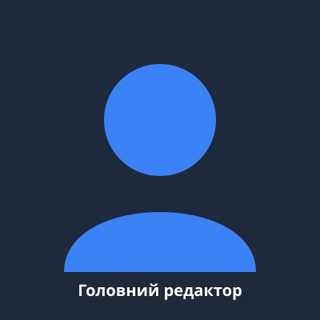

Про портал та мета його створення
Новинний портал «Важливі Новини» створений для надання читачам оперативної, об’єктивної та перевіреної
інформації про події в світі.
Наш новинний портал прагне надавати найновішу, найдостовірнішу та
надзвичайно оперативну інформацію по всьому світу.
Завдання для досягнення мети:
- Впровадження цілодобового перевірки фактів та боротьби з маніпуляціями.
- Розширення мережі власного аналітичного відділу та регіональних кореспондентів.
- Забезпечення безперешкодного доступу читачів до актуальних новин у сферах економіки та культури.
- Створення ефективного каналу діалогу з аудиторією через форму зворотного зв’язку.
Корисні посилання:
Внутрішні посилання документу:
1. Перейти до Таблиці працівників та джерел
2. Перейти до Інформації про Головного редактора
Зовнішні ресурси:
1. Найбільша у світі новинна організація BBC
2. Міжнародне агентство новин Reuters
Інформація про Головного редактора

Коваленко Олександр Вікторович
Посада: Головний редактор новинного порталу «Важливі Новини».
Освіта: Вища. Київський національний університет імені Тараса Шевченка, Інститут
журналістики (магістр журналістики).
Біографія: Олександр Коваленко працює у сфері мас-медіа понад 12 років. Спеціалізується
на політичній та економічній аналітиці, є автором публікацій про стандарти медіаграмотності.